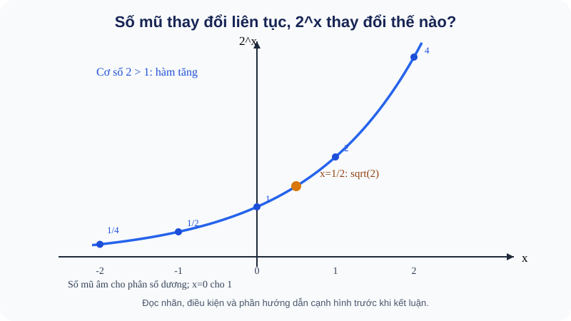

Bài 18. Lũy thừa với số mũ thực
TOÁN 11 · CHƯƠNG VI · KẾT NỐI TRI THỨC · TẬP HAI
Hiểu vì sao số mũ được mở rộng từ nguyên → hữu tỉ → thực, đọc đúng căn bậc n, giữ điều kiện cơ số và vận dụng vào biến đổi, so sánh, lãi kép.
1. Khám phá kiến thức
Em đã quen với \(2^3=8\): số mũ 3 nói có ba thừa số 2. Nhưng kí hiệu \(2^{-1}\), \(2^{1/2}\), \(2^{\sqrt2}\) có còn ý nghĩa “nhân lặp” không? Không. Ta phải mở rộng phép lũy thừa theo cách giữ được những quy tắc nhất quán, đồng thời không làm phép tính vô nghĩa. Đây là cầu nối từ căn thức tới hàm số mũ và lôgarit; biết bản chất sẽ giúp em không nhầm dấu trừ của số mũ với dấu âm của kết quả.
1.1. Lũy thừa với số mũ nguyên
Vì sao có số mũ 0 và âm? Với cơ số 2, dãy giá trị \(2^3=8\), \(2^2=4\), \(2^1=2\) giảm một nửa mỗi khi giảm số mũ 1. Nếu tiếp tục cùng quy luật, \(2^0=1\), \(2^{-1}=\frac12\), \(2^{-2}=\frac14\). Số mũ âm không biến lũy thừa thành một số âm: nó nói lấy nghịch đảo của lũy thừa dương.
| Số mũ \(n\) | \(-2\) | \(-1\) | \(0\) | \(1\) | \(2\) |
|---|---|---|---|---|---|
| \(2^n\) | \(\frac14\) | \(\frac12\) | \(1\) | \(2\) | \(4\) |
Khi \(a\ne0\), ta định nghĩa \(a^0=1\) và \(a^{-n}=\frac1{a^n}\) với \(n\) nguyên dương. Điều kiện \(a\ne0\) là thật sự cần: \(0^{-1}=\frac10\) không có nghĩa. Trong phạm vi bài này \(0^0\) cũng không định nghĩa, trong khi \(0^n=0\) với \(n\) nguyên dương.
Các quy tắc quen thuộc \(a^ma^n=a^{m+n}\), \(a^m/a^n=a^{m-n}\) tiếp tục đúng cho số mũ nguyên khi các cơ số khác 0 và phép chia có nghĩa. Đừng áp quy tắc nhân cho phép cộng: \(2^2+2^3=12\ne2^5\). Với cơ số \(a>1\), số mũ tăng thì \(a^n\) tăng; với \(0<a<1\), thứ tự đảo chiều.
Lũy thừa mũ nguyên còn giúp viết số liệu rất lớn hoặc rất nhỏ: \(0{,}0000042=4{,}2\cdot10^{-6}\) m. Trong kí hiệu khoa học, hệ số dương nằm trong khoảng từ 1 đến dưới 10; số mũ là số nguyên cho biết dịch dấu phẩy bao nhiêu bậc. Đây là cách viết giá trị, không phải phép làm tròn tùy tiện.
Vận dụng. Hãy tính \(3^{-2}\), \((-\frac12)^{-3}\) và giải thích vì sao \(0^{-2}\) không xác định.
Đối chiếu
Lời giải: \(3^{-2}=\frac1{3^2}=\frac19\). Với cơ số \(-\frac12\ne0\), \((-\frac12)^{-3}=\frac1{(-1/2)^3}=-8\). Còn \(0^{-2}=\frac1{0^2}=\frac10\) vô nghĩa. Kết quả âm của biểu thức thứ hai đến từ cơ số âm và số mũ lẻ, không phải vì số mũ âm.
Kiểm lỗi
Nếu tính \(3^{-2}=-9\), em đã nhầm dấu trừ trước số mũ với dấu trừ trước cả lũy thừa. Hãy đọc \(a^{-n}\) thành “nghịch đảo của \(a^n\)” rồi mới thay cơ số.
1.2. Lũy thừa với số mũ hữu tỉ
Vì sao lũy thừa phân số lại liên quan căn? Giả sử muốn giữ \((a^{1/2})^2=a\) với \(a>0\). Số dương có bình phương bằng \(a\) là \(\sqrt a\), nên cần đặt \(a^{1/2}=\sqrt a\). Tương tự, \(a^{1/3}=\sqrt[3]a\), và \(a^{m/n}=\sqrt[n]{a^m}\) cho \(a>0\), \(n\) nguyên dương, \(m\) nguyên. Định nghĩa này không mang nghĩa “nhân \(a\) với nhau \(m/n\) lần”.
Trước khi dùng định nghĩa ấy, phải phân biệt căn bậc \(n\) của một số thực và căn số học:
| Bài toán | Số thực có thể nhận được | Điều kiện chính |
|---|---|---|
| \(x^3=-8\) | \(x=-2\) | Căn bậc lẻ của số âm tồn tại duy nhất |
| \(x^2=9\) | \(x=-3\) hoặc \(x=3\) | Số dương có hai căn bậc chẵn đối nhau |
| \(\sqrt9\) | \(3\) | Kí hiệu căn bậc hai lấy giá trị không âm |
| \(\sqrt{-9}\) | Không có số thực | Số âm không có căn bậc chẵn thực |
Đó là lí do \(\sqrt{x^2}=|x|\), không luôn bằng \(x\). Ví dụ \(x=-5\) thì \(\sqrt{(-5)^2}=\sqrt{25}=5\ne-5\). Với căn bậc lẻ, \(\sqrt[3]{x^3}=x\) cho cả \(x<0\).
Liên hệ với đồ thị: Quan sát đồ thị \(2^x\) ở dưới. Điểm có hoành độ \(x=\frac12\) ứng với tung độ \(\sqrt2\): vì \((2^{1/2})^2=2\). Các điểm \(x=-1,0,1\) lần lượt ứng với \(\frac12,1,2\). Hình diễn tả cùng quy luật khi ta mở rộng tập hợp các số mũ, chứ không chứng minh được mọi công thức chỉ bằng đo hình.

Hai phép biến đổi căn nữa rất hữu ích. Khi các biểu thức đều xác định, \((\sqrt[n]{a})^m=\sqrt[n]{a^m}\) và \(\sqrt[n]{\sqrt[k]{a}}=\sqrt[nk]{a}\), với \(n,k\) nguyên dương, \(m\) nguyên. Chẳng hạn, \(\sqrt[3]{\sqrt{64}}=\sqrt[3]{8}=2=\sqrt[6]{64}\): căn bậc hai rồi căn bậc ba tương ứng với lũy thừa bậc sáu ngược lại. Khi có căn bậc chẵn phải kiểm dấu dưới căn; khi \(m<0\), không được dùng cơ số bằng 0.
Giới hạn áp dụng quan trọng: SGK định nghĩa lũy thừa số mũ hữu tỉ tổng quát trong bài này với cơ số \(a>0\). Căn bậc lẻ của số âm vẫn có nghĩa, ví dụ \(\sqrt[3]{-8}=-2\); nhưng không được từ trường hợp căn bậc lẻ suy ra một cơ số âm có lũy thừa với mọi số mũ thực. Nếu bỏ điều kiện \(a>0\), các phép biến đổi nâng lũy thừa thành lũy thừa khác có thể sai hoặc vô nghĩa.
Vận dụng. Tính \(27^{2/3}\), \(\left(\frac1{16}\right)^{-3/4}\) và giải thích tại sao \(\sqrt{x^2}=|x|\).
Đối chiếu
Lời giải: \(27^{2/3}=(\sqrt[3]{27})^2=3^2=9\); \((\frac1{16})^{-3/4}=(16)^{3/4}=(\sqrt[4]{16})^3=2^3=8\). \(\sqrt{x^2}\) là căn không âm của số \(x^2\ge0\), nên bằng \(|x|\).
Kiểm lỗi
Nếu được \(-5\) từ \(\sqrt{(-5)^2}\), em đang dùng căn như phép “triệt tiêu bình phương” mà quên điều kiện căn số học không âm. Với số mũ phân số, luôn ghi cơ số dương trước khi dùng luật.
1.3. Lũy thừa với số mũ thực
Vì sao còn phải định nghĩa \(a^{\sqrt2}\)? \(\sqrt2\) không phải phân số, nên công thức số mũ hữu tỉ chưa áp trực tiếp. Ta có thể chọn các phân số ngày càng gần \(\sqrt2\): \(1{,}4;1{,}41;1{,}414;1{,}4142;\ldots\). Với \(a>0\), các giá trị \(a^{1{,}4}\), \(a^{1{,}41}\), ... tiến đến một giá trị dương xác định, không phụ thuộc vào cách chọn dãy phân số xấp xỉ. Giá trị đó là \(a^{\sqrt2}\). Chính Chương V về giới hạn dãy số giúp ta hiểu cách tạo nghĩa cho số mũ vô tỉ.
Sự mở rộng này giữ nguyên các quy tắc với \(a,b>0\) và \(x,y\in\mathbb R\): nhân cùng cơ số thì cộng số mũ, chia cùng cơ số thì trừ số mũ, lũy thừa của lũy thừa thì nhân hai số mũ, và các quy tắc cho tích/thương cơ số dương. Nhưng không được tự phân phối lũy thừa qua phép cộng: \((a+b)^x\ne a^x+b^x\) nói chung.
So sánh cần để ý cơ số: Nếu \(a>1\), từ \(x<y\) suy \(a^x<a^y\). Nếu \(0<a<1\), từ \(x<y\) lại suy \(a^x>a^y\). Khi so sánh \(8^{\sqrt3}\) và \(4^{2\sqrt3}\), đưa cả hai về cơ số \(2>1\): \(8^{\sqrt3}=2^{3\sqrt3}\), \(4^{2\sqrt3}=2^{4\sqrt3}\), nên biểu thức đầu nhỏ hơn biểu thức sau. Không so sánh riêng hai cơ số khi hai số mũ khác nhau.
Máy tính cho giá trị gần đúng, ví dụ khi tính \(2^{\sqrt2}\), máy hiển thị giá trị gần đúng. Ta nhập đầy đủ số mũ có dấu ngoặc (hoặc phím lũy thừa tùy máy), rồi làm tròn theo yêu cầu. Hãy phân biệt kí hiệu \(=\) với \(\approx\): \(8^{2/3}=4\) chính xác, còn \(2^{\sqrt2}\approx2{,}6651\) khi làm tròn bốn chữ số thập phân.
Mô hình lãi kép: Gửi \(P\) triệu đồng, lãi suất \(r\) mỗi kì (viết dưới dạng số thập phân, chẳng hạn \(6\%=0{,}06\)), sau \(N\) kì nếu lãi nhập gốc ta có \(A=P(1+r)^N\). Nếu chỉ cập nhật sau từng kì trọn vẹn, \(N\) là số nguyên không âm; dùng \(N\) thực cần một giả thiết mô hình bổ sung, không tự coi mọi khoản gửi thực tế được tính theo số mũ không nguyên. Chính cách lũy thừa mô tả tăng trưởng theo tỉ lệ giúp môn học có ứng dụng.
Vận dụng. Không dùng máy tính, so sánh \(9^{\sqrt2}\) và \(27^{\sqrt2}\). Với máy tính, ước lượng \(3^{\sqrt2}\) đến bốn chữ số sau dấu phẩy; phần nào là chính xác, phần nào gần đúng?
Đối chiếu
Lời giải: \(9^{\sqrt2}=3^{2\sqrt2}\), \(27^{\sqrt2}=3^{3\sqrt2}\). Vì \(2\sqrt2<3\sqrt2\) và \(3>1\), nên \(9^{\sqrt2}<27^{\sqrt2}\) là kết luận chính xác. Máy tính cho \(3^{\sqrt2}\approx4{,}7288\): kết quả thập phân là gần đúng sau làm tròn.
Kiểm lỗi
Không so sánh hai biểu thức có cả cơ số lẫn số mũ khác nhau chỉ bằng cách nhìn cơ số. Đưa về cùng cơ số và kiểm cơ số đó lớn hơn 1 hay nhỏ hơn 1 trước khi so số mũ.
2. Kiến thức SGK
2.1. Lũy thừa với số mũ nguyên
Với số nguyên dương \(n\) và \(a\in\mathbb R\), \(a^n\) là tích \(n\) thừa số đều bằng \(a\). Với \(a\ne0\), \(a^0=1\) và \(a^{-n}=1/a^n\). \(a\) là cơ số, \(n\) là số mũ. \(0^n=0\) nếu \(n>0\); \(0^0\) và \(0^{-n}\) không xác định trong bài này.
Với \(a,b\ne0\) và \(m,n\in\mathbb Z\): \(a^ma^n=a^{m+n}\); \(\dfrac{a^m}{a^n}=a^{m-n}\); \((a^m)^n=a^{mn}\); \((ab)^n=a^nb^n\); \(\left(\dfrac ab\right)^n=\dfrac{a^n}{b^n}\). Quy tắc chỉ đúng khi các biểu thức trong đó có nghĩa.
Phương pháp đọc số mũ âm: \(a^{-n}=\dfrac1{a^n}\) là nghịch đảo, không phải \(-a^n\). Ví dụ \((-2)^{-3}=\frac1{(-2)^3}=-\frac18\), còn \(2^{-3}=\frac18\).
So sánh với cơ số dương: \(a>1\) thì \(m>n\Leftrightarrow a^m>a^n\); \(0<a<1\) thì \(m>n\Leftrightarrow a^m<a^n\). Với cơ số âm, các mệnh đề đơn điệu này không tự áp dụng.
Ứng dụng kí hiệu khoa học: \(c\cdot10^k\), với \(1\le|c|<10\), \(k\in\mathbb Z\), dùng để ghi số liệu rất lớn/nhỏ (ở bài SGK xét số dương \(c>0\)). Ví dụ \(0{,}0000042=4{,}2\cdot10^{-6}\).
2.2. Lũy thừa với số mũ hữu tỉ
Cho \(a\in\mathbb R\), \(n\in\mathbb N^*\). Số thực \(b\) là căn bậc \(n\) của \(a\) nếu \(b^n=a\). Khi \(n\) lẻ, mỗi \(a\) có một căn bậc \(n\) thực. Khi \(n\) chẵn, \(a>0\) có hai căn đối nhau; \(\sqrt[n]a\) chỉ căn số học không âm. Nếu \(a<0\), không có căn bậc chẵn thực; căn bậc \(n\) của 0 là 0.
Với cùng bậc \(n\), \(\sqrt[n]a\sqrt[n]b=\sqrt[n]{ab}\); \(\dfrac{\sqrt[n]a}{\sqrt[n]b}=\sqrt[n]{a/b}\) khi mẫu khác 0 và mọi căn xác định. Với lũy thừa, \(\sqrt[n]{a^n}=a\) nếu \(n\) lẻ, còn \(\sqrt[n]{a^n}=|a|\) nếu \(n\) chẵn. Ngoài ra, \((\sqrt[n]{a})^m=\sqrt[n]{a^m}\) và \(\sqrt[n]{\sqrt[k]{a}}=\sqrt[nk]{a}\) với \(n,k\) nguyên dương, \(m\) nguyên, khi mọi biểu thức đều có nghĩa. Không bỏ điều kiện dấu ở căn bậc chẵn và điều kiện khác 0 khi số mũ âm.
Với \(a>0\), số hữu tỉ \(r=\dfrac mn\), \(m\in\mathbb Z\), \(n\in\mathbb N^*\), đặt \(a^r=a^{m/n}=\sqrt[n]{a^m}=(\sqrt[n]a)^m\). Giá trị không phụ thuộc cách biểu diễn cùng một số hữu tỉ \(r\). Các tính chất lũy thừa mũ nguyên mở rộng cho trường hợp này khi cơ số dương.
Với \(a>0,\ n\in\mathbb N^*,\ m\in\mathbb Z\): \(\displaystyle a^{m/n}=\sqrt[n]{a^m}=(\sqrt[n]a)^m\). Đặc biệt \(a^{1/2}=\sqrt a\), \(a^{1/3}=\sqrt[3]a\), \(a^{-1/2}=1/\sqrt a\).
Hạn chế: Căn bậc lẻ của số âm có nghĩa, nhưng không tự suy quy tắc lũy thừa với mọi số mũ thực cho cơ số âm. Khi biến đổi các số mũ phân số theo định nghĩa chung của SGK, phải ghi \(a>0\). \(\sqrt{x^2}=|x|\).
2.3. Lũy thừa với số mũ thực
Cho \(a>0\), số vô tỉ \(\alpha\) và một dãy số hữu tỉ \(r_n\to\alpha\). Khi đó dãy \(a^{r_n}\) có một giới hạn dương, không phụ thuộc dãy hữu tỉ xấp xỉ đã chọn; giới hạn đó gọi là \(a^\alpha\). Cùng với số mũ hữu tỉ đã định nghĩa, ta có \(a^x\) cho mọi \(x\in\mathbb R\) khi \(a>0\).
Với \(a,b>0\), \(x,y\in\mathbb R\): \(a^xa^y=a^{x+y}\), \(a^x/a^y=a^{x-y}\), \((a^x)^y=a^{xy}\), \((ab)^x=a^xb^x\), \((a/b)^x=a^x/b^x\). Điều kiện cơ số dương là bắt buộc cho bộ tính chất số mũ thực tổng quát.
Nếu \(a>1\), từ \(x<y\) suy \(a^x<a^y\). Nếu \(0<a<1\), từ \(x<y\) suy \(a^x>a^y\). Nếu \(a=1\), mọi \(1^x=1\); không có chiều bất đẳng thức nghiêm ngặt.
Cách chọn phép biến đổi: Muốn tính chính xác, đưa các lũy thừa về cùng cơ số và dùng quy tắc số mũ khi cơ số dương. Muốn so sánh, trước tiên xét cơ số lớn hơn 1 hay nằm giữa 0 và 1. Muốn tính gần đúng \(a^\alpha\) với \(\alpha\) vô tỉ, dùng máy tính và ghi dấu \(\approx\) kèm mức làm tròn.
| Dạng | Kết quả và điều kiện |
|---|---|
| Giá trị chính xác | \(27^{2/3}=9\), \(16^{3/4}=8\) |
| Giá trị gần đúng | \(2^{\sqrt2}\approx2{,}6651\) (4 chữ số thập phân) |
| Lãi kép từng kì | \(A=P(1+r)^N\), \(1+r>0\), \(N\) là số kì trọn vẹn |
Kiểm máy tính: Ví dụ \(2^{\sqrt2}\) cần nhập cơ số 2 và số mũ \(\sqrt2\) trong cùng một phép lũy thừa; số thập phân trên màn hình là kết quả gần đúng. Cần đọc đúng dấu âm và dấu ngoặc với cơ số âm trong bài số mũ nguyên, không lạm dụng máy để “hợp thức hóa” biểu thức cơ số âm mũ vô tỉ.
3. Ví dụ
3.1. Số mũ âm nghĩa là nghịch đảo
Đề bài. Tính \(A=(\frac23)^{-3}\), \(B=(-2)^{-3}\). Giải thích tại sao hai kết quả khác dấu.
Phân tích: Cơ số đều khác 0 nên được dùng định nghĩa \(a^{-n}=1/a^n\). Với cơ số âm, lũy thừa mũ lẻ âm vì tích ba thừa số âm; dấu trừ trong số mũ chỉ yêu cầu lấy nghịch đảo.
Lời giải. \(A=\dfrac1{(2/3)^3}=\dfrac1{8/27}=\dfrac{27}{8}\). Còn \(B=\dfrac1{(-2)^3}=\dfrac1{-8}=-\dfrac18\). Dấu của \(B\) âm do cơ số \(-2\) được nâng lên bậc lẻ.
Kiểm lại: \((2/3)^3\cdot A=1\), \((-2)^3\cdot B=1\). Không ghi \((2/3)^{-3}=-(2/3)^3\).
3.2. Số mũ nguyên trong kí hiệu khoa học
Đề bài. Viết \(0{,}0000042\) m dưới dạng \(a\cdot10^n\) với \(1\le a<10\), \(n\) nguyên.
Phân tích: Muốn hệ số thành \(4{,}2\), ta dịch dấu phẩy sang phải sáu chữ số, nên phải bù bằng \(10^{-6}\) để giữ nguyên độ lớn.
Lời giải. \(0{,}0000042=4{,}2\cdot10^{-6}\). Hệ số \(4{,}2\) nằm trong \([1,10)\), số mũ \(-6\) nguyên, đúng dạng khoa học của một số dương.
Kiểm lại: \(4{,}2\cdot0{,}000001=0{,}0000042\). Đơn vị mét không thay đổi khi đổi cách viết.
3.3. Căn bậc chẵn và căn bậc lẻ
Đề bài. Tính \(\sqrt[3]{-125}\), \(\sqrt[4]{16}\); giải phương trình \(x^4=16\) trong tập số thực.
Phân tích: Căn bậc lẻ giữ dấu của số dưới căn; kí hiệu căn bậc chẵn chỉ giá trị không âm, khác với tìm mọi nghiệm của phương trình lũy thừa bậc chẵn.
Lời giải. Vì \((-5)^3=-125\), \(\sqrt[3]{-125}=-5\). Vì \(2^4=16\) và \(2\ge0\), \(\sqrt[4]{16}=2\). Phương trình \(x^4=16\) có hai nghiệm thực \(x=2\) và \(x=-2\), vì cả hai có lũy thừa bậc bốn bằng 16.
Kiểm lại: \(\sqrt[4]{16}\) chỉ bằng 2, không viết \(\pm2\) sau dấu căn; \(\pm2\) là tập nghiệm của phương trình \(x^4=16\).
3.4. Vì sao cần dấu giá trị tuyệt đối?
Đề bài. Rút gọn \(P=\sqrt{x^2}+\sqrt[3]{x^3}\) với \(x=-7\). Viết công thức tổng quát cho \(x\in\mathbb R\).
Phân tích: Căn chẵn phải không âm, còn căn lẻ có thể âm. Vì vậy chỉ thay \(\sqrt{x^2}\) bằng \(|x|\), không phải \(x\).
Lời giải. Với mọi \(x\in\mathbb R\), \(\sqrt{x^2}=|x|\), \(\sqrt[3]{x^3}=x\), nên \(P=|x|+x\). Khi \(x=-7\), \(P=7-7=0\). Nếu \(x\ge0\), \(P=2x\); nếu \(x<0\), \(P=0\).
Kiểm lại: Thế \(x=-7\) trực tiếp: \(\sqrt{49}+\sqrt[3]{-343}=7+(-7)=0\). Việc bỏ dấu giá trị tuyệt đối sẽ cho sai kết quả \(-14\).
3.5. Tính lũy thừa với số mũ hữu tỉ
Đề bài. Tính \(A=16^{3/4}\) và \(B=(\frac1{81})^{-3/4}\).
Phân tích: Cả hai cơ số dương, đủ điều kiện dùng \(a^{m/n}=(\sqrt[n]a)^m\). Với \(B\), số mũ âm yêu cầu lấy nghịch đảo; có thể đổi \(\frac1{81}=3^{-4}\) để gộp số mũ.
Lời giải. \(16^{3/4}=(\sqrt[4]{16})^3=2^3=8\). Với \(B\), \((\frac1{81})^{-3/4}=(3^{-4})^{-3/4}=3^3=27\). Cũng có thể viết \(B=81^{3/4}=(\sqrt[4]{81})^3=3^3=27\).
Kiểm lại: \(8^4=16^3\), \(27^4=81^3\) đúng. Đừng đánh đồng số mũ \(-3/4\) với phép trừ đi \(3/4\) của cơ số.
3.6. Rút gọn số mũ chứa căn
Đề bài. Với \(a>0\), rút gọn \(T=\dfrac{a^{\sqrt7+1}\cdot a^{2-\sqrt7}}{(a^{\sqrt3+1})^{\sqrt3-1}}\).
Phân tích: Cùng cơ số dương nên gộp số mũ của tích thành tổng, số mũ của lũy thừa thành tích. Hiệu hai bình phương xuất hiện trong \((\sqrt3+1)(\sqrt3-1)\).
Lời giải. Tử số \(a^{\sqrt7+1}a^{2-\sqrt7}=a^{\sqrt7+1+2-\sqrt7}=a^3\). Mẫu số \((a^{\sqrt3+1})^{\sqrt3-1}=a^{(\sqrt3+1)(\sqrt3-1)}=a^{3-1}=a^2\). Do đó \(T=a^3/a^2=a\).
Kiểm lại: Điều kiện \(a>0\) làm mọi số mũ vô tỉ và phép chia trong bài có nghĩa. Cả tử/mẫu đều là lũy thừa dương.
3.7. So sánh số mũ vô tỉ không cần máy tính
Đề bài. So sánh \(8^{\sqrt3}\) và \(4^{2\sqrt3}\); sau đó so sánh \((\frac12)^{\sqrt2}\) với \((\frac12)^{3/2}\).
Phân tích: Cặp đầu đưa về cùng cơ số \(2>1\); cặp sau đã có cơ số \(0<\frac12<1\), nên khi tăng số mũ, lũy thừa giảm.
Lời giải. \(8^{\sqrt3}=2^{3\sqrt3}\), \(4^{2\sqrt3}=2^{4\sqrt3}\). Vì \(3\sqrt3<4\sqrt3\) và \(2>1\), \(8^{\sqrt3}<4^{2\sqrt3}\). Mặt khác \(\sqrt2<\frac32\) (vì \(2<9/4\)); do \(0<\frac12<1\), \((\frac12)^{\sqrt2}>(\frac12)^{3/2}\).
Kiểm lại: Phải đọc hai hướng: với \(a>1\) giữ chiều bất đẳng thức, với \(0<a<1\) đảo chiều. Không so sánh bằng cách xem riêng độ lớn của cơ số.
3.8. Lãi kép theo kì hạn và phép tính gần đúng
Đề bài. Gửi \(100\) triệu đồng với lãi suất cố định \(6\%\) một năm, cuối mỗi năm lãi nhập gốc, không rút tiền và không có phí. Tính số tiền cuối năm thứ ba, làm tròn đến \(0{,}01\) triệu đồng.
Phân tích: Tiền cuối mỗi kì được nhân với \(1+0{,}06=1{,}06\). Vì có đúng ba lần nhập lãi, số mũ là \(3\) nguyên; đây là ứng dụng của mô hình lãi kép, không tự nội suy sang các phần năm chưa quy định.
Lời giải. \(A=100(1{,}06)^3=100\cdot1{,}191016=119{,}1016\) triệu đồng. Làm tròn đến \(0{,}01\) triệu đồng, số tiền xấp xỉ \(119{,}10\) triệu đồng.
Kiểm lại: Năm 1: 106 triệu; năm 2: 112,36 triệu; năm 3: 119,1016 triệu. Tiền lãi năm sau tính trên vốn đã cộng lãi, không phải cộng mỗi năm đúng 6 triệu.
4. Lỗi thường gặp và cách tự khắc phục
Mở từng mục để xem dấu hiệu, vì sao sai và cách sửa.
4.1. Hiểu số mũ âm là dấu âm ở ngoài
Dấu hiệu: Tính \(3^{-2}=-9\) hoặc cho \((\frac23)^{-3}\) một kết quả âm.
Vì sao sai: Số mũ \(-n\) của cơ số khác 0 yêu cầu lấy nghịch đảo \(1/a^n\), không đổi dấu kết quả.
Cách sửa: Ghi \(a^{-n}=1/a^n\) trước khi thay số, rồi xác định dấu từ cơ số và tính chẵn/lẻ của số mũ nguyên.
4.2. Nhầm dấu căn số học với nghiệm phương trình
Dấu hiệu: Viết \(\sqrt{9}=\pm3\) hoặc \(\sqrt[4]{16}=\pm2\).
Vì sao sai: Kí hiệu căn bậc chẵn \(\sqrt[n]a\) chỉ giá trị không âm; hai căn đối nhau xuất hiện khi giải \(x^n=a\), không phải trong một kí hiệu căn.
Cách sửa: Tách “tính \(\sqrt[n]a\)” khỏi “giải \(x^n=a\)”; kiểm bậc căn chẵn/lẻ và dấu số dưới căn.
4.3. Bỏ giá trị tuyệt đối khi căn bậc chẵn của lũy thừa
Dấu hiệu: Rút gọn \(\sqrt{x^2}=x\) cho mọi \(x\in\mathbb R\).
Vì sao sai: Với \(x<0\), \(x\) âm nhưng căn số học \(\sqrt{x^2}\) không âm.
Cách sửa: Dùng \(\sqrt{x^2}=|x|\). Chỉ khi có điều kiện \(x\ge0\) mới được viết bằng \(x\).
4.4. Bỏ điều kiện cơ số dương ở số mũ phân số/thực
Dấu hiệu: Lấy căn bậc lẻ được \(\sqrt[3]{-8}=-2\) rồi khẳng định \((-8)^\alpha\) có nghĩa với mọi \(\alpha\in\mathbb R\).
Vì sao sai: Việc căn bậc lẻ của cơ số âm có nghĩa không mở rộng thành phép lũy thừa số mũ thực tổng quát cho cơ số âm. Căn bậc chẵn của số âm không có giá trị thực.
Cách sửa: Dùng \(a>0\) cho các tính chất lũy thừa mũ hữu tỉ/thực trong SGK; nếu đang giải một căn bậc lẻ cụ thể thì phát biểu đúng riêng trường hợp đó.
4.5. Gộp số mũ cho phép cộng hoặc quên chiều so sánh
Dấu hiệu: Viết \(2^2+2^3=2^5\) hoặc cho \(x<y\Rightarrow(\frac12)^x<(\frac12)^y\).
Vì sao sai: Quy tắc cộng số mũ áp dụng cho phép nhân hai lũy thừa cùng cơ số; với cơ số \(0<a<1\), lũy thừa giảm khi số mũ tăng.
Cách sửa: Phân biệt dấu phép toán và kiểm cơ số so với 1. Tính đối chiếu \(4+8=12\ne32\).
4.6. Nhầm kết quả máy tính và lãi kép với giá trị chính xác hoặc mô hình vô điều kiện
Dấu hiệu: Ghi \(2^{\sqrt2}=2{,}6651\) như đẳng thức chính xác, hoặc tính \(100(1{,}06)^{2{,}5}\) cho tiền gửi lãi nhập gốc mỗi năm mà không nêu quy ước phần năm.
Vì sao sai: Giá trị thập phân làm tròn là gần đúng; số kì lãi kép là một dữ kiện mô hình, không tự suy cách tính nửa kì từ lãi ghép mỗi năm.
Cách sửa: Ghi \(\approx\) cùng độ chính xác, nêu rõ số kì và quy ước lãi suất khi xử lý mô hình tài chính.
Học tiếp: Core và Luyện tập Bài 18 · Tự luận Chương VI · Tự kiểm tra cuối chương.
Nguồn đối chiếu: SGK Toán 11 Kết nối tri thức với cuộc sống, tập hai, Bài 18, trang in 4–9. Ba mục chính: Lũy thừa với số mũ nguyên; Lũy thừa với số mũ hữu tỉ; Lũy thừa với số mũ thực. Đã đối chiếu văn bản PDF số hóa và hình SGK/asset bài đang có; chưa có ảnh render trực tiếp đủ từng trang SGK, cần xác minh offset trang in↔PDF. Hình 2^x đã có sẵn trên main được tái sử dụng nguyên file trong hai tab; bảng so sánh được đặt ngay mục cần đọc. Chỉ nâng cấp learner Kiến thức, không đổi Core/Luyện tập hoặc Tự kiểm tra và ngân hàng câu.